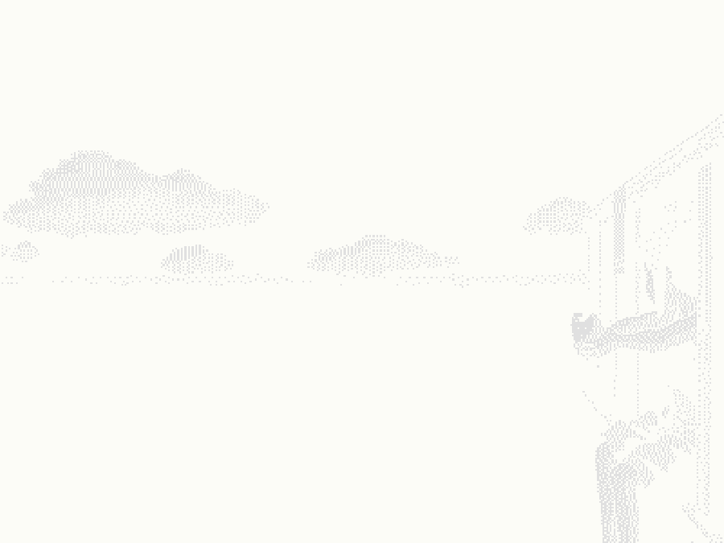

＜/HELLO.＞
If you're reading this, you're most likely either my professor or someone I send the link to. Whoever you are, I want to welcome you to my portfolio.
Enclosed within these pages are examples of my work, collected over the course of a few excruciating hours. I scoured through Google Doc after Google Doc. What I've put together here is what I believe is worth sharing with a general audience (employers too, hopefully).
You can browse through each file as you choose. Each file is a shade darker than the directories above it. If you're looking for examples of my work, head over to the Portfolio section, and if you're more interested in Photography, I have something for you too.
＜/GOALS.＞
This portfolio mainly exists for three reasons. As I’m currently a student, this was built as part of a course requirement at UWT to showcase my academic work thus far. It’s a record of what I’ve learned and how far I’ve come since starting my academic career at UWT.
The second is more personal. I wanted a dedicated space on the internet to keep my work that isn't a Google Drive that nobody will ever have access to. It gives me the opportunity to reference it and elaborate on what I do, how I think, and what I’ve made. This leads to my third point.
I’d like to inspire. I’m not entirely sure who will end up here (or if this will even be found), but if someone happens to stumble across this site, I hope they walk away with a new idea that they didn't have before. Even if that idea is to create their own space on the internet. The internet has become so expansive, yet so distant and isolated, that we sometimes lose ourselves within search engines and social media. We fail to realize that anyone has the power to just sit down for a few hours a day and create something new and personal.
So if someone somehow stumbles across this website and gets the motivation to build something of their own, then this portfolio has already done much more than what I planned.
＜/DESIGN CONVENTIONS.＞
The site was built using only HTML and CSS without JavaScript or any kind of templates. The layout is very simple, with only a left sidebar for navigation and a viewport for all other content. The color is intentionally very muted like encyclopedia websites, such as Wikipedia and Britannica and a conceptual exploration website called The Library of Babel.
I thought this design choice was very fitting, considering that the work itself is mostly written work and some images. The sidebar was modeled after a Linux file tree system, which enhances both the structural feel of the website and because I thought it was very fitting for a CSS major student.